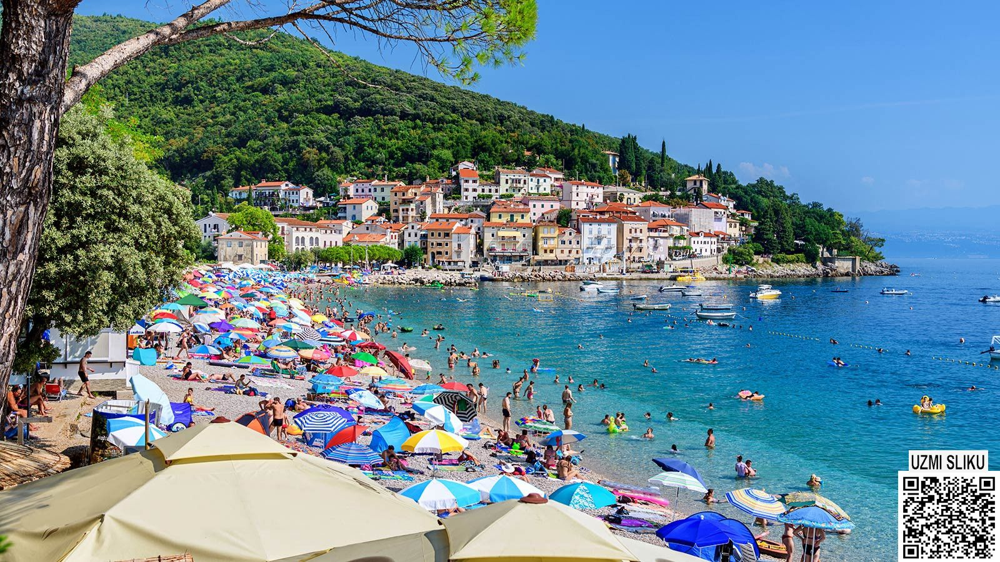
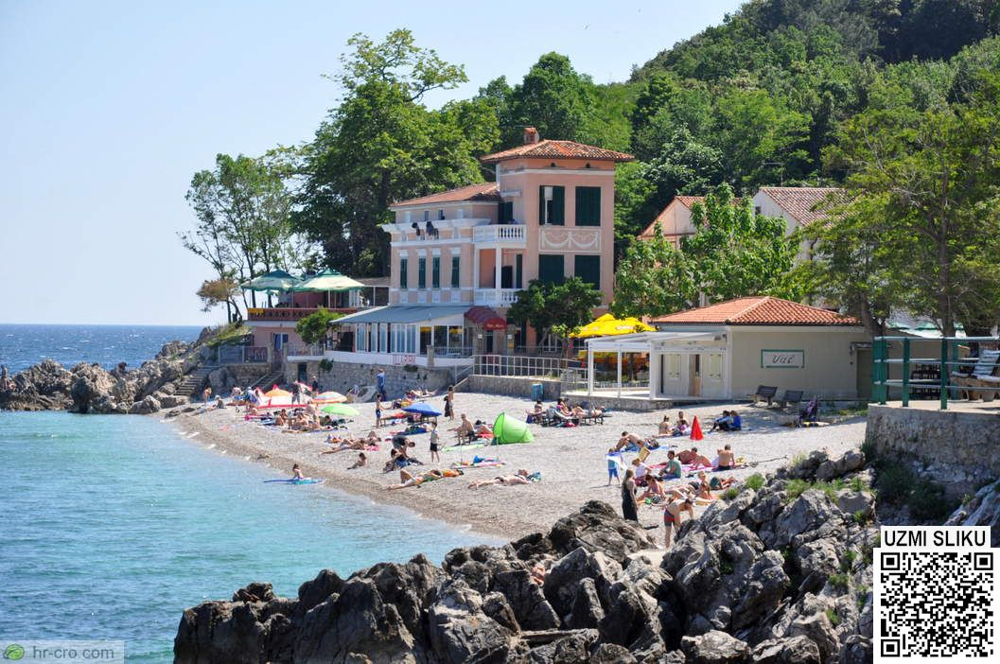

Plaža Sipar

Plaža Sipar
Jedna od dviju glavnih plaža u Mošćeničkoj Dragi. Poprilično je poznata te je favorit turistima. Na njoj se mogu iznajmiti ležaljke (ukoliko je plaža prenatrpana), JetSkis, pedaline, suncobrani, te također postoji veliki odabir kafića blizu nje. Ova plaža je također najpopularnije zbog njene povezanosti sa planinskim i šumskim reljefom. Povezuje se sa brojnim putevima koji su idealni za planinare, a također posjeduje normalne puteve za povrat u centar, te za put do Mošćenica.
Recenzije
Kratki video turista koji pokazuje glavnu plažu (Plaža Sipar)
Plaža Sv.Ivan
 Plaža Sv.Ivan
druga javna plaža koja se nalazi u Mošćeničkoj Dragi i nedaleko je smještena od glavne plaže (oko 300m). Plaža je smještena na jako lijepom krajoliku što joj daje brojne pohvale, također plaža zna biti manje natrpana, tj. manje ljudi je na njoj što je isto veliki plus plaže
Više o plaži Sv.Ivan možete pročitati ovdje
Recenzije